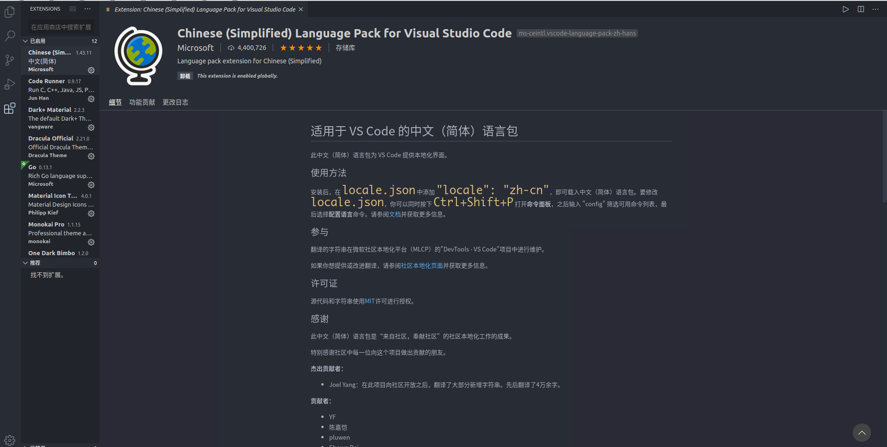

golang简介¶
go语言介绍¶
- Go 即Golang，是Google公司2009年11月正式对外公开的一门编程语言。
- Go是一门静态强类型语言，是区别于解释型语言的编译型语言。
go语言特性¶
- 是一门跨平台的编译型语言，可以在不通平台可以编译出另一个平台的可执行文件，如在Windows平台可以编译linux平台的可执行程序
- 有垃圾回收机制
- 支持面向对象和面向过程的编程模式
编译型语言和解释型语言¶
1、编译型语言¶
需通过编译器（compiler）将源代码编译成机器码，之后才能执行的语言。一般需经过编译（compile）、链接（linker）这两个步骤。编译是把源代码编译成机器码，链接是把各个模块的机器码和依赖库串连起来生成可执行文件。
- 优点：编译器一般会有预编译的过程对代码进行优化。因为编译只做一次，运行时不需要编译，所以编译型语言的程序执行效率高。可以脱离语言环境独立运行。
- 缺点：编译之后如果需要修改就需要整个模块重新编译。编译的时候根据对应的运行环境生成机器码，不同的操作系统之间移植就会有问题，需要根据运行的操作系统环境编译不同的可执行文件。
代表语言：C、C++、Golang
2、解释型语言¶
解释性语言的程序不需要编译，相比编译型语言省了道工序，解释性语言在运行程序的时候才逐行翻译。
- 优点：有良好的平台兼容性，在任何环境中都可以运行，前提是安装了解释器（虚拟机）。灵活，修改代码的时候直接修改就可以，可以快速部署，不用停机维护。
- 缺点：每次运行的时候都要解释一遍，执行速度不如编译型语言。
代表语言：JavaScript、Python、PHP、Perl、Ruby
动态语言和静态语言¶
1、动态语言¶
是一类在运行时可以改变其结构的语言：例如新的函数、对象、甚至代码可以被引进，已有的函数可以被删除或是其他结构上的变化。通俗点说就是在运行时代码可以根据某些条件改变自身结构。
主要动态语言：Object-C、C#、JavaScript、PHP、Python
2、静态语言¶
与动态语言相对应的，运行时结构不可变的语言就是静态语言。如Java、C、C++
动态类型语言和静态类型语言¶
1、动态类型语言¶
动态类型语言和动态语言是完全不同的两个概念。动态类型语言是指在运行期间才去做数据类型检查的语言，说的是数据类型，动态语言说的是运行是改变结构，说的是代码结构。
动态类型语言的数据类型不是在编译阶段决定的，而是把类型绑定延后到了运行阶段。
主要语言：Python、Ruby、JavaScript、swift、PHP、Perl。
2、静态类型语言¶
静态语言的数据类型是在编译其间确定的或者说运行之前确定的，编写代码的时候要明确确定变量的数据类型。
主要语言：C、C++、C#、Java、Golang
强类型语言和若类型语言¶
1、强类型语言¶
强类型语言，一旦一个变量被指定了某个数据类型，如果不经过强制类型转换，那么它就永远是这个数据类型。你不能把一个整形变量当成一个字符串来处理。
主要语言：Java、Python、Ruby
2、弱类型语言¶
数据类型可以被忽略，一个变量可以赋不同数据类型的值。一旦给一个整型变量a赋一个字符串值，那么a就变成字符类型。
主要语言：JavaScript、PHP
注意：一个语言是不是强类型语言和是不是动态类型语言也没有必然联系。Python是动态类型语言，是强类型语言。JavaScript是动态类型语言，是弱类型语言。Golang是静态类型语言，是强类型语言。
Go开发环境搭建¶
注意：Go语言1.14版本之后推荐使用go modules管理以来，也不再需要把代码写在GOPATH目录下了
下载地址¶
Go官网下载地址：https://golang.org/dl/
Go官方镜像站（推荐）：https://golang.google.cn/dl/
不同平台安装¶
Windows平台和Mac平台推荐下载可执行文件版，Linux平台下载压缩文件版

Windows安装¶
双击，一路next即可
linux下安装¶
我们在版本选择页面选择并下载好go1.14.1.linux-amd64.tar.gz文件：
1 | |
解压到指定目录
1 2 | |
配置环境变量
Linux下有两个文件可以配置环境变量，其中/etc/profile是对所有用户生效的；$HOME/.profile是对当前用户生效的，根据自己的情况自行选择一个文件打开，添加如下两行代码，保存退出。
1 2 | |
修改/etc/profile后要重启生效，修改$HOME/.profile后使用source命令加载$HOME/.profile文件即可生效。
1 2 | |
mac下安装¶
下载可执行文件安装即可
Go语言架构¶
GOPATH的工作区包含bin，src，和pkg这三个：
- src——源码（包含第三方的和自己项目的）
- bin——编译生成的可执行程序
- pkg——编译时生成的对象文件
Go开发编辑器¶
Go采用的是UTF-8编码的文本文件存放源代码，理论上使用任何一款文本编辑器都可以做Go语言开发。
使用jetbrains出品的付费IDE Goland 以及 微软的 vscode
Goland 使用简单，推荐使用。简单配置如下：¶

vscode配置¶
安装简体中文插件

安装go插件

安装Go语言开发工具包
在Go语言开发的时候为我们提供诸如代码提示、代码自动补全等功能。
Windows平台按下Ctrl+Shift+P，Mac平台按Command+Shift+P，这个时候VS Code界面会弹出一个输入框，如下图：

选中全部，点击确定，安装。当然很可能会下载失败
一般我是直接下载已经编译好的可执行文件，拷贝到GOROOT/bin 目录下
用Go编写第一个程序¶
第一个helloword¶
1 2 3 4 5 6 7 8 9 10 | |
go中的注释¶
1 2 3 4 5 6 7 | |
go代码的执行¶
- 可以利用goland这个IDE的快捷键
- 先编译再执行
1 2 3 | |
- 编译并执行
1 | |
go install¶
go install表示安装的意思，它先编译源代码得到可执行文件，然后将可执行文件移动到GOPATH的bin目录下。因为我们的环境变量中配置了GOPATH下的bin目录，所以我们就可以在任意地方直接执行可执行文件了。
跨平台编译¶
默认我们go build的可执行文件都是当前操作系统可执行的文件，如果我想在windows下编译一个linux下可执行文件，那需要怎么做？
需要指定目标操作系统的平台和处理器架构即可：
1 2 3 | |
使用了cgo的代码是不支持跨平台编译的
然后再执行go build命令，得到的就是能够在Linux平台运行的可执行文件了。
Mac 下编译 Linux 和 Windows平台 64位 可执行程序：
1 2 | |
Linux 下编译 Mac 和 Windows 平台64位可执行程序：
1 2 | |
Windows下编译Mac平台64位可执行程序：
1 2 3 4 | |